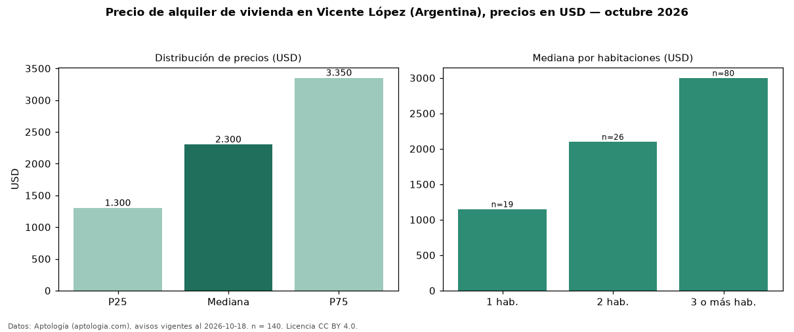

Precio de alquiler de vivienda en Vicente López (Argentina), precios en USD — octubre 2026
Con 140 avisos vigentes, el canon mediano de vivienda en alquiler en Vicente López (Argentina) es USD 2.300 al mes. Por metro cuadrado, la mediana es USD 19,41/m² al mes (n = 137 avisos con área). Por precio mediano es la ciudad 3 de 5 de Argentina con al menos 30 avisos de vivienda en alquiler (USD). Por tipo: 72 % departamentos, 21 % casas, 6 % monoambientes. La mitad central de los avisos va de USD 1.300 a USD 3.350 (razón 2,6), una dispersión alta. El área mediana anunciada es 106 m². El segmento con más oferta es el de 3 o más habitaciones (80 avisos, mediana USD 3.000); pasar de 1 habitación a 3 o más habitaciones cambia la mediana +161 %. Datos: Aptología (aptologia.com), CC BY 4.0 — https://www.aptologia.com/ar/alquiler/vicente-lopez. Archivos: PDF, CSV con las cifras y gráfica PNG.

| Avisos únicos | 140 |
|---|---|
| Percentil 25 | COP 1.300 |
| Mediana | COP 2.300 |
| Percentil 75 | COP 3.350 |
| Mediana por m² | COP 19 |
Fuente: avisos vigentes de portales inmobiliarios recopilados por Aptología, deduplicados (mínimo 30 avisos únicos por celda). Precios pedidos, no cerrados. Fecha: 2026-10-18.